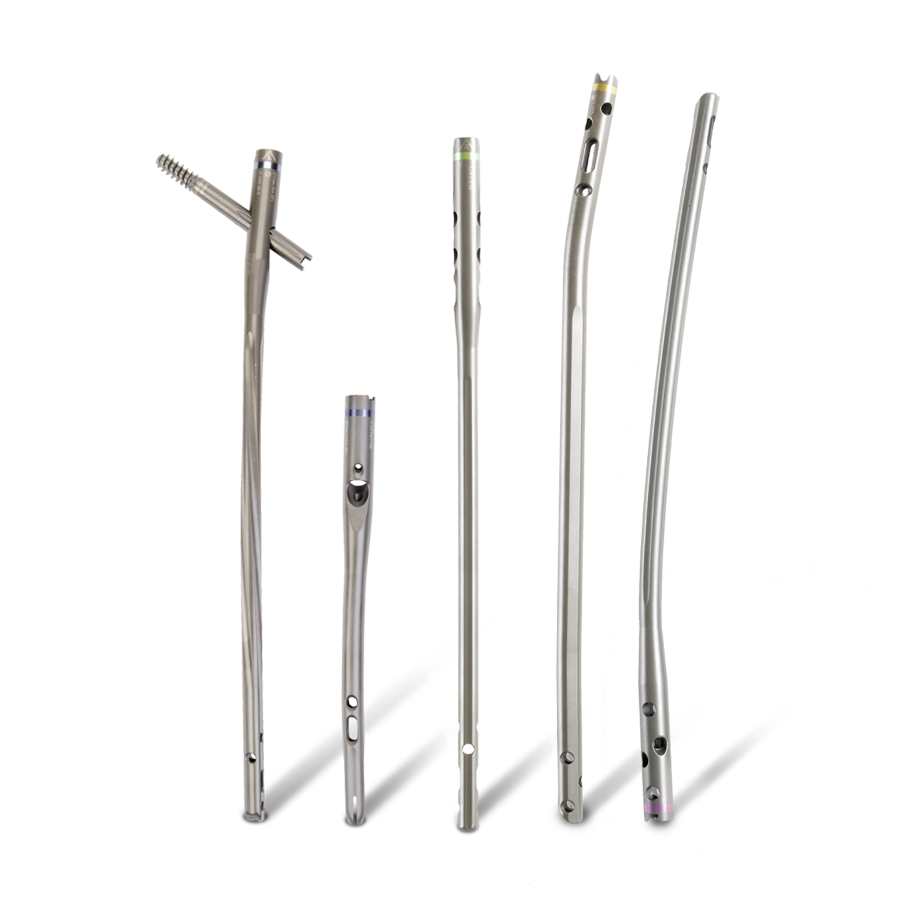

Sistema Zimmer® Natural Nail
Zimmer Natural Nail System é a próxima geração de Hastes intramedulares. Elas são caracterizadas por seu formato anatômico, que tem a intenção de replicar o formato anatômico natural dos vários ossos longos do esqueleto humano. Essas hastes foram projetadas para aplicações específicas para ajudar os cirurgiões a restaurar o formato do osso fraturado ao seu estado natural, pré-lesionado.